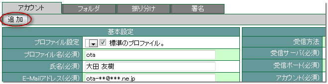
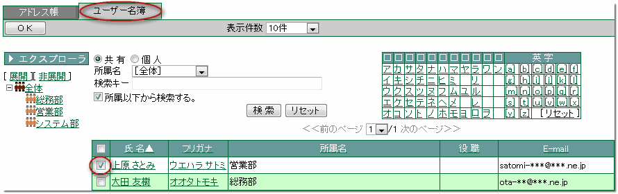
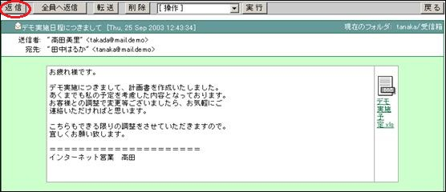
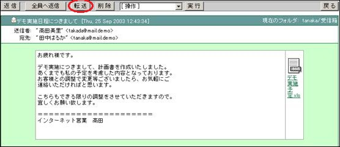
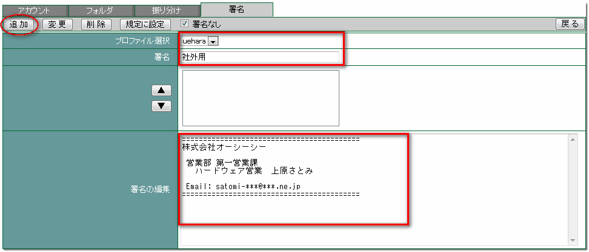
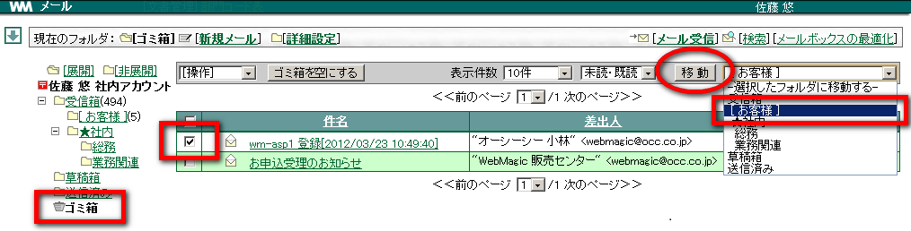
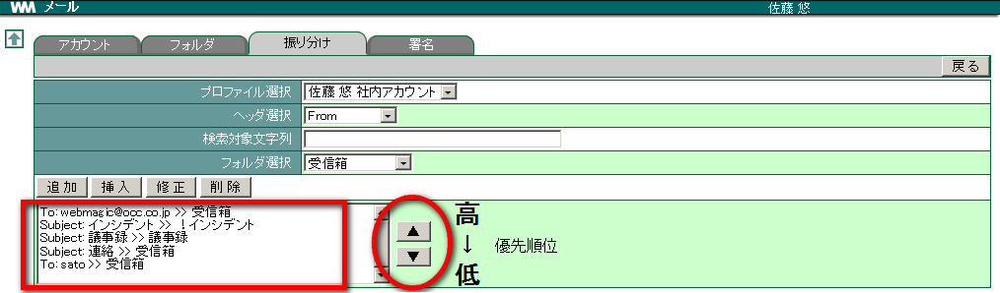
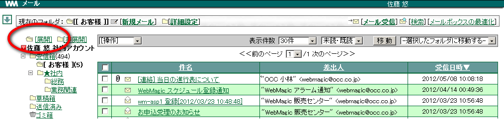
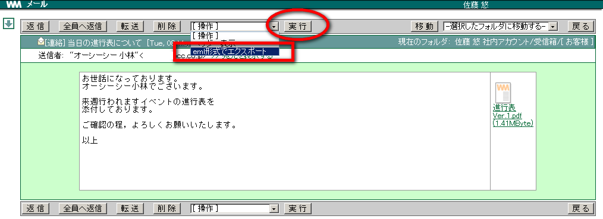

3. メール¶
3.1. メールアカウントを設定する¶
メールのアカウントを設定します。複数のメールアカウントを登録できるので、使い分けすることもできます。
メニューの
 をクリックします。
をクリックします。メッセージが表示されたら、 OK をクリックします。 [1]

[アカウント] タブでまず「基本設定」を入力します。

次に「受信設定」「送信設定」を入力します。

追加 をクリックします。

戻る をクリックします。
3.1.1. メールのアカウントを変更する¶
設定したアカウントの内容を変更したい場合、メールの [詳細設定] をクリックし変更したいプロファイル名を選択、変更する項目を修正したあと 変更 をクリックします。
3.1.2. メールのアカウントを削除する¶
3.1.2.1. メールが送信できない場合¶

メール送信方法の種類
| 送信方法 | 説明 |
|---|---|
| SMTP | 電子メールを送信するためのプロトコル |
| SMTP over SSL | 電子メール送信時に、メールクライアントとサーバ間の通信を暗号化する方式 |
| STARTTLS | SMTP/POP3 で通信を開始し、通信途中で暗号化された状態に切り替える方式 |
メール認証方法の種類
| 認証方法 | 説明 |
|---|---|
| POP before SMTP | 電子メール送信前に、POP サーバに接続して認証を行う |
| SMTP 認証(SMTP-AUTH) | 電子メール送信時に、SMTP サーバで認証を行う |
Warning
メールアカウント設定情報については、メールサーバ管理者へご確認ください。
3.1.2.2. 他のメールソフトでも受信したい場合¶
メールの [詳細設定] をクリックし、他のメールソフトでも受信したい [プロファイル名] を選択して [サーバからメールを削除する] のチェックを外します。

3.2. メールを送信する¶
メールを新規に作成します。 宛先は新規入力することも、アドレス帳にあらかじめ登録されている中から選択することもできます。 複数の宛先に一度に送信することもできます。
メニューの
をクリックします。メール受信画面の [新規メール] をクリックします。

「宛先」 に送信先のメールアドレスを入力します。また、送信先が WebMagic に登録されているユーザの場合、 [参照] をクリックします。

送信先にしたいユーザーの所属名を選択し、氏名にチェックを入れ OK をクリックします。

再度、送信者確認の画面が表示されます。送信先に変更がなければ OK をクリックします。

「件名」と「本文」を入力します。

添付ファイルがある場合は 参照 をクリックし、ファイルを指定して 追加 をクリックします。

プレビュー をクリックすると別ウィンドウでプレビュー画面が表示されます。この画面から送信することもできます。


3.3. メールを受信する¶
メールを受信しましょう。メールを受信するには [メール受信] をクリックします。
- メニューの をクリックします。
- メール受信画面の [メール受信] をクリックします。

- メールが受信されます。
- 読みたいメールの [件名] をクリックします。
3.3.1. 受信されたメールの状態¶
受信したメールは、件名の左側にあるアイコンの状態で [未読/既読/添付] を確認することができます。
・・・ 既読済みメール
・・・ 未読受信メール
・・・ 添付ファイル付きメール


3.4. メールに返信する¶
メニューの
をクリックします。メールの「件名」をクリックし、メールを開きます。
返信 をクリックします。 [3]

[宛先] [件名] が自動的に入力されます。本文も引用符付きで引用されているので、引用された本文を編集します。

送信 をクリックします。
3.5. メールを転送する¶
メールを第三者に転送しましょう。メールの内容を知っておいてほしいユーザーへメールの内容をそのまま送信することを「転送する」といいます。
メニューの
をクリックします。メールの「件名」をクリックし、メールを開きます。
転送 をクリックします。

[件名] と [本文]、添付ファイルがあった場合は [添付ファイル] も自動的に追加されます。

[宛先] を設定します。
送信 をクリックします。
3.6. 署名を設定する¶
メールには文章の最後に署名を付ける場合があります。 あらかじめ署名の設定をしておくと、メールを作成する際に自動的にメール本文に署名が入力されます。
メニューの
をクリックします。メール画面の [詳細設定] をクリックします。

「署名」をクリックし、署名を作るプロファイルを選択、[署名] と [署名編集] を入力して 追加 をクリックします。

追加された署名は ▲ ▲ のボックスに表示されます。 [4]

戻る をクリックします。

3.6.2. 「標準の署名」を使いたくない場合¶
標準の署名 に設定した署名を自動的にメール本文に入力したくない場合、署名を設定する画面で「署名なし」にチェックを入れます。
3.7. メールを削除する¶
メニューの
をクリックします。削除したいメールにチェックを入れ、 削除 をクリックします。

削除したメールは「ゴミ箱」へ移動します。
3.7.1. 削除したメールを元に戻す¶
削除したメールはいったん「ゴミ箱」に移動するので、「ゴミ箱」を開いて元に戻したいメールをチェックします。移動先フォルダの「受信箱」を選択し、 移動 をクリックすると元の「受信箱」に戻すことができます。


3.7.3. ゴミ箱を一度に空にする¶
ゴミ箱内のすべてのメールを削除する場合は一番上のチェックを入れるか、 ゴミ箱を空にする をクリックします。

Warning
ゴミ箱内から削除されたメールは復旧することはできません。
3.8. メールを移動する¶
既存フォルダや新規に作成したフォルダにメールを移動できます。
メニューの
をクリックします。移動したいメールをチェックします。移動先のフォルダ名を選択し、 移動 をクリックします。

メールが指定したフォルダに移動します。
3.9. メールを検索する¶
検索文字列を元にメールが検索でき、表示されたメールの削除・移動ができます。


3.10. 自動振り分けを設定する¶
社外からのメールを「社外」フォルダに振り分けたり、件名が「議事録〜」のメールを「議事録集」フォルダに振り分けたりすることもできます。初めに設定しておけば、着信時に自動的に振り分けられます。
メニューの
をクリックします。メール受信一覧の [詳細設定] をクリックします。

「新規フォルダ」をクリックし、各項目を入力して 追加 をクリックします。

「振り分け」をクリックし、各項目を入力して 追加 をクリックします。

Note
振り分け条件の「ヘッダ」について
Note
振り分けの優先順位

3.11. 振り分けを手動で実行する¶
現在の受信箱に追加した振り分け条件を反映させたい場合は [振り分け適用] をクリックすると任意のタイミングで振り分けることができます。 [8]

Note
フォルダが表示されない

3.12. メールをエクスポートする¶
受信したメールや送信済みのメールを eml 形式でエクスポートすることができます。
メニューの
をクリックします。エクスポートしたいメールの [件名] をクリックします。

[操作] から [eml 形式でエクスポート] を選択し、 実行 をクリックします。

保存 をクリックし、ファイルの保存先を選択した後、 OK をクリックします。

3.13. メールをインポートする¶
メニューの
をクリックします。[メール取り込み] をクリックします。

参照 をクリックし、取り込みたいファイルを選択して OK をクリックします。

取り込みに成功すると、下記のようなメッセージが表示されますので、 戻る をクリックします。

一覧画面で取り込んだメールが表示されます。

3.14. メールヘッダを確認する¶
メニューの
をクリックします。メールの 「件名」をクリックし、詳細画面を表示します。
[ヘッダー表示] を選択し 実行 をクリックします。

脚注
| [1] | 初めてメールアカウントを設定する場合にのみ必要な操作です。次回からはメール受信画面の [詳細設定] より行います。 |
| [2] | ファイルを読み込むことができない場合は、ファイルを一旦 PC に保存する必要があります。保存したファイルは、ソフトが入っている PC で開きましょう。 |
| [3] | 同送されている全員に返信したい場合、 [全員に返信] をクリックします。 |
| [4] | 署名のうち標準で使用する署名を選択し、 規定の設定 をクリックします。 |
| [5] | 検索したメールは 「3.8. メールを削除する」 のように、削除できます。 |
| [6] | 検索したメールは 「3.9. メールを移動する」 のように、移動できます。 |
| [7] | Organization の情報が含まれているメールに限り有効。 |
| [8] | 振り分けを行えるのは [受信箱] にあるメールのみです。 |